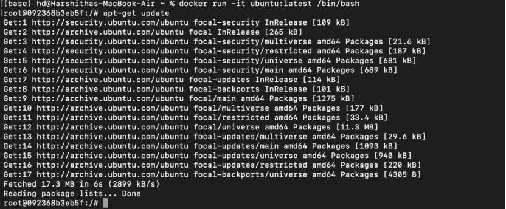

Docker as a platform leverages containers – packages of an application along with all the tools it needs to run to
eliminate differences between environments.
In other words, containerized software will operate and can be managed consistently
regardless of where it is installed. Additionally, containers are much easier to set up, start, stop, and
maintain than good old virtual machines.
Key steps involved:
Install Docker on the computer from official website
After installation you can run "docker run hello-world" to test if the installation was done correctly or not.
If the installation was successful, you should be able to see a message like the one below
Once the installation is done, use the command "docker pull ubuntu" in the docker command window to pull an Ubuntu
image from DockerHub.
You can also use docker images to check existing Docker images on your computer.
Run this Ubuntu image to start a Docker container and then log into this container. Once logged in, perform the following
steps:
- Update the system using "apt -get update"
- Install Apache2 server using "apt-get install apache2"

Commit this Docker image and create a new Docker image which we will use with Apache server.
Using the Vim editor in Ubuntu,create an "index.html" file
To run a web server from Docker
- Start apache service using “ /etc/init.d/apache2 restart ” in your Docker container.
- Type "127.0.0.1" in a browser tab of your system and you can see the web page hosted!

Reference